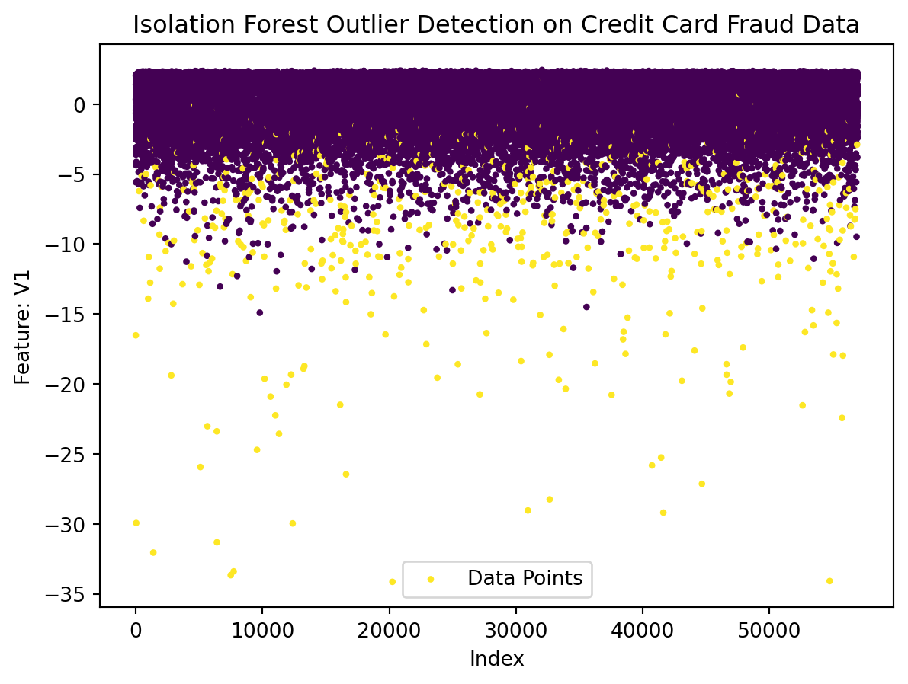

Anomaly detection is a crucial aspect of data analysis, particularly in domains where identifying rare and potentially fraudulent events is paramount. In this analysis, we’ll explore the application of the Isolation Forest algorithm for anomaly detection in credit card transactions. The dataset used here is the Credit Card Fraud Detection dataset, which contains features derived from credit card transactions, including both legitimate and fraudulent ones.
Loading the Dataset:
Let’s begin by importing the necessary libraries and loading the Credit Card Fraud Detection dataset. This dataset is a curated collection of credit card transactions, where the ‘Class’ column denotes whether a transaction is normal (0) or fraudulent (1).
Code
# Importing librariesimport pandas as pdimport numpy as npimport matplotlib.pyplot as pltfrom sklearn.ensemble import IsolationForestfrom sklearn.model_selection import train_test_splitfrom sklearn.metrics import confusion_matrix, classification_report# Load the Credit Card Fraud Detection datasetdf = pd.read_csv('creditcard.csv')# Display the first few rows of the dataframeprint(df.head())# Explore the dataset#print(df.info())
The ‘info()’ method provides an overview of the dataset, including the data types and the presence of any missing values.
Data Exploration:
Before delving into anomaly detection, it’s crucial to understand the composition of the dataset. Checking for missing values, exploring basic statistics, and visualizing the distribution of features can offer valuable insights into the characteristics of normal and fraudulent transactions.
Feature Extraction:
Next, we extract the features (X) and the target variable (y) from the dataset. The target variable ‘Class’ indicates whether a transaction is normal (0) or fraudulent (1).
Code
# Extract the features and target variableX = df.drop(['Class'], axis=1)y = df['Class']
Train-Test Split:
To assess the performance of the Isolation Forest algorithm, we split the dataset into training and testing sets. The training set will be used to fit the model, and the testing set will be employed to evaluate its ability to identify anomalies.
Code
# Split the data into training and testing setsX_train, X_test, y_train, y_test = train_test_split(X, y, test_size=0.2, random_state=42)
Isolation Forest Model:
The Isolation Forest algorithm is well-suited for anomaly detection tasks. It works by isolating anomalies rather than profiling normal instances. In this case, the contamination parameter is set to 0.01, indicating that approximately 1% of the data is expected to be fraudulent.
Code
# Isolation Forest modelmodel = IsolationForest(contamination=0.01, random_state=42)# Fitting the modelmodel.fit(X_train)
In a Jupyter environment, please rerun this cell to show the HTML representation or trust the notebook. On GitHub, the HTML representation is unable to render, please try loading this page with nbviewer.org.
The model is then used to predict outliers on the test set. The predictions are converted to binary labels (1 for normal transactions and -1 for anomalies), and the model’s performance is evaluated using metrics such as confusion matrix and classification report.
Code
# Predicting outliers on the test sety_pred_test = model.predict(X_test)# Convert predictions to binary labels (1 for normal, -1 for outliers)y_pred_test_binary = np.where(y_pred_test ==1, 0, 1)# Evaluate the modelprint(confusion_matrix(y_test, y_pred_test_binary))print(classification_report(y_test, y_pred_test_binary))
Lastly, a scatter plot is created to visualize the results of the Isolation Forest algorithm. Each data point is represented based on its index and the ‘V1’ feature, with normal transactions in one color and anomalies in another.
Code
# Visualize the resultsplt.scatter(range(len(X_test)), X_test['V1'], s=5, c=y_pred_test_binary, cmap='viridis', label='Data Points')plt.title('Isolation Forest Outlier Detection on Credit Card Fraud Data')plt.xlabel('Index')plt.ylabel('Feature: V1')plt.legend()plt.show()

This scatter plot provides an intuitive view of how well the Isolation Forest algorithm distinguishes between normal and anomalous credit card transactions based on the ‘V1’ feature. Overall, this analysis demonstrates the application of anomaly detection in a real-world scenario, showcasing the importance of such techniques in identifying potential fraud.
Source Code
---title: "Anomaly Detection"image: anomaly.jpgauthor: "Aishwarya"date: "2023-11-27"categories: [Anomaly Detection]format: html: code-fold: true code-tools: truejupyter: python3---Anomaly detection is a crucial aspect of data analysis, particularly in domains where identifying rare and potentially fraudulent events is paramount. In this analysis, we'll explore the application of the Isolation Forest algorithm for anomaly detection in credit card transactions. The dataset used here is the Credit Card Fraud Detection dataset, which contains features derived from credit card transactions, including both legitimate and fraudulent ones.**Loading the Dataset:**Let's begin by importing the necessary libraries and loading the Credit Card Fraud Detection dataset. This dataset is a curated collection of credit card transactions, where the 'Class' column denotes whether a transaction is normal (0) or fraudulent (1).```{python}# Importing librariesimport pandas as pdimport numpy as npimport matplotlib.pyplot as pltfrom sklearn.ensemble import IsolationForestfrom sklearn.model_selection import train_test_splitfrom sklearn.metrics import confusion_matrix, classification_report# Load the Credit Card Fraud Detection datasetdf = pd.read_csv('creditcard.csv')# Display the first few rows of the dataframeprint(df.head())# Explore the dataset#print(df.info())```The 'info()' method provides an overview of the dataset, including the data types and the presence of any missing values.**Data Exploration:**Before delving into anomaly detection, it's crucial to understand the composition of the dataset. Checking for missing values, exploring basic statistics, and visualizing the distribution of features can offer valuable insights into the characteristics of normal and fraudulent transactions.**Feature Extraction:**Next, we extract the features (X) and the target variable (y) from the dataset. The target variable 'Class' indicates whether a transaction is normal (0) or fraudulent (1).```{python}# Extract the features and target variableX = df.drop(['Class'], axis=1)y = df['Class']```**Train-Test Split:**To assess the performance of the Isolation Forest algorithm, we split the dataset into training and testing sets. The training set will be used to fit the model, and the testing set will be employed to evaluate its ability to identify anomalies.```{python}# Split the data into training and testing setsX_train, X_test, y_train, y_test = train_test_split(X, y, test_size=0.2, random_state=42)```**Isolation Forest Model:**The Isolation Forest algorithm is well-suited for anomaly detection tasks. It works by isolating anomalies rather than profiling normal instances. In this case, the contamination parameter is set to 0.01, indicating that approximately 1% of the data is expected to be fraudulent.```{python}# Isolation Forest modelmodel = IsolationForest(contamination=0.01, random_state=42)# Fitting the modelmodel.fit(X_train)```**Prediction and Evaluation:**The model is then used to predict outliers on the test set. The predictions are converted to binary labels (1 for normal transactions and -1 for anomalies), and the model's performance is evaluated using metrics such as confusion matrix and classification report.```{python}# Predicting outliers on the test sety_pred_test = model.predict(X_test)# Convert predictions to binary labels (1 for normal, -1 for outliers)y_pred_test_binary = np.where(y_pred_test ==1, 0, 1)# Evaluate the modelprint(confusion_matrix(y_test, y_pred_test_binary))print(classification_report(y_test, y_pred_test_binary))```**Visualization:**Lastly, a scatter plot is created to visualize the results of the Isolation Forest algorithm. Each data point is represented based on its index and the 'V1' feature, with normal transactions in one color and anomalies in another.```{python}# Visualize the resultsplt.scatter(range(len(X_test)), X_test['V1'], s=5, c=y_pred_test_binary, cmap='viridis', label='Data Points')plt.title('Isolation Forest Outlier Detection on Credit Card Fraud Data')plt.xlabel('Index')plt.ylabel('Feature: V1')plt.legend()plt.show()```This scatter plot provides an intuitive view of how well the Isolation Forest algorithm distinguishes between normal and anomalous credit card transactions based on the 'V1' feature. Overall, this analysis demonstrates the application of anomaly detection in a real-world scenario, showcasing the importance of such techniques in identifying potential fraud.